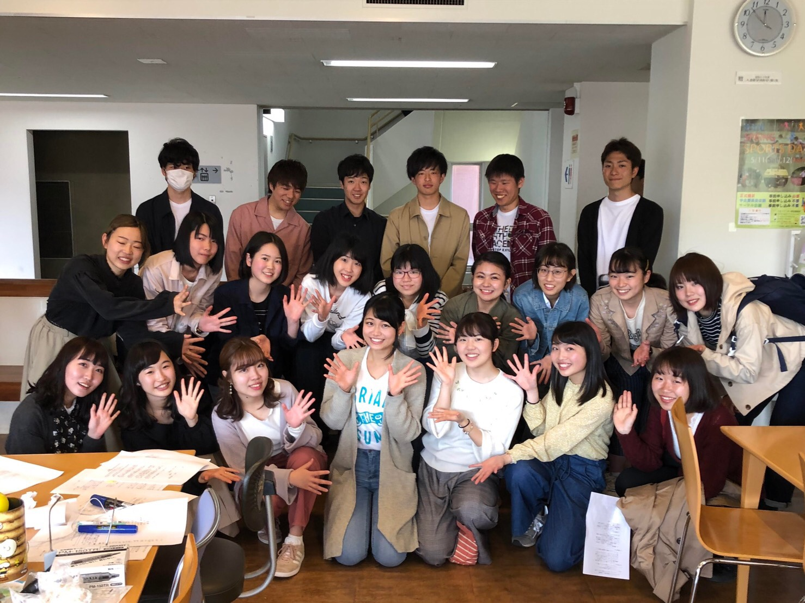
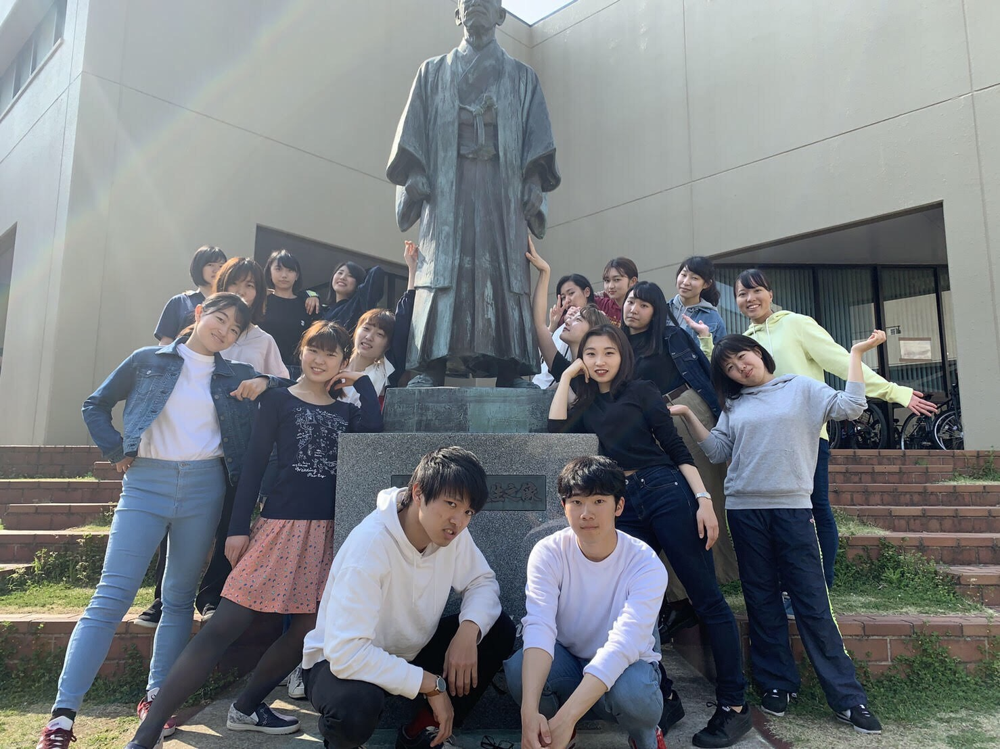
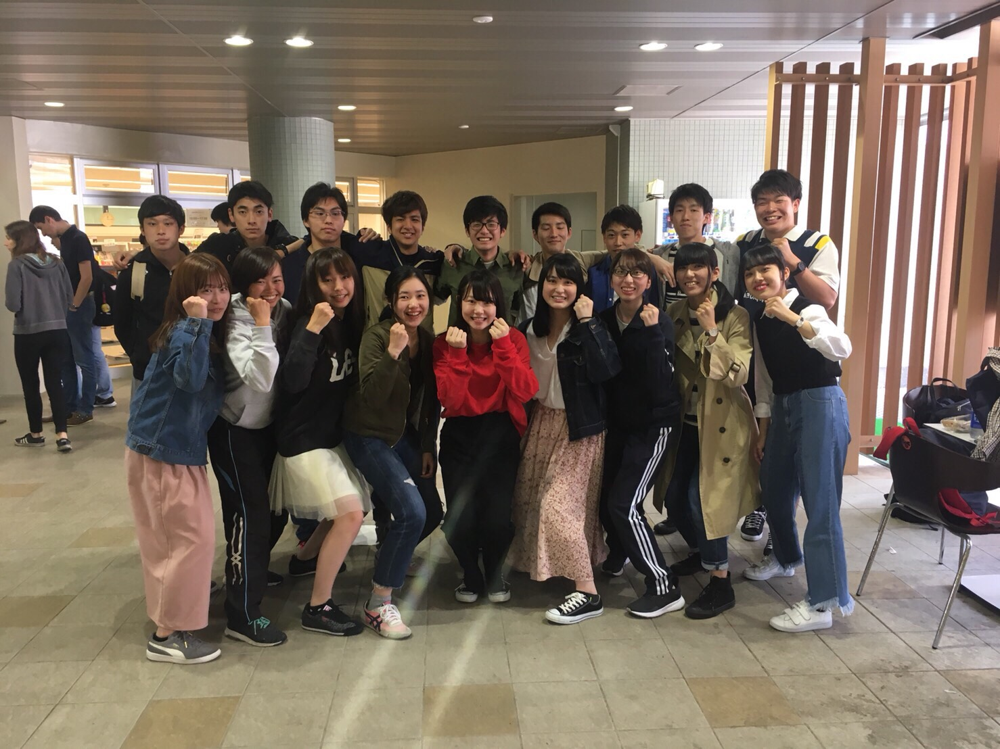
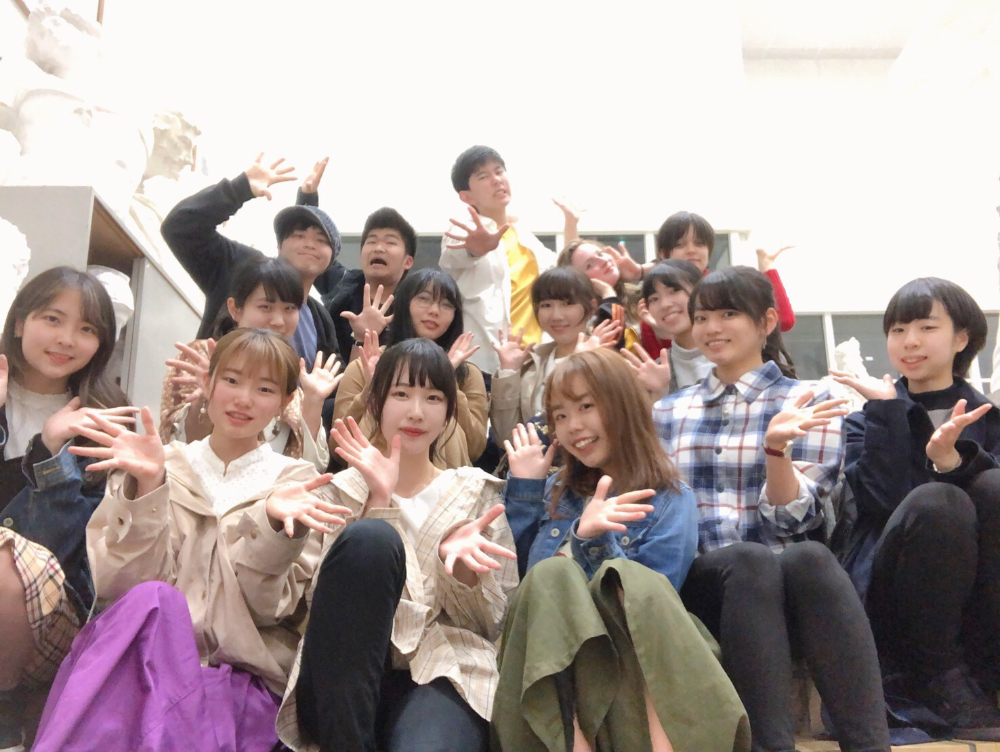
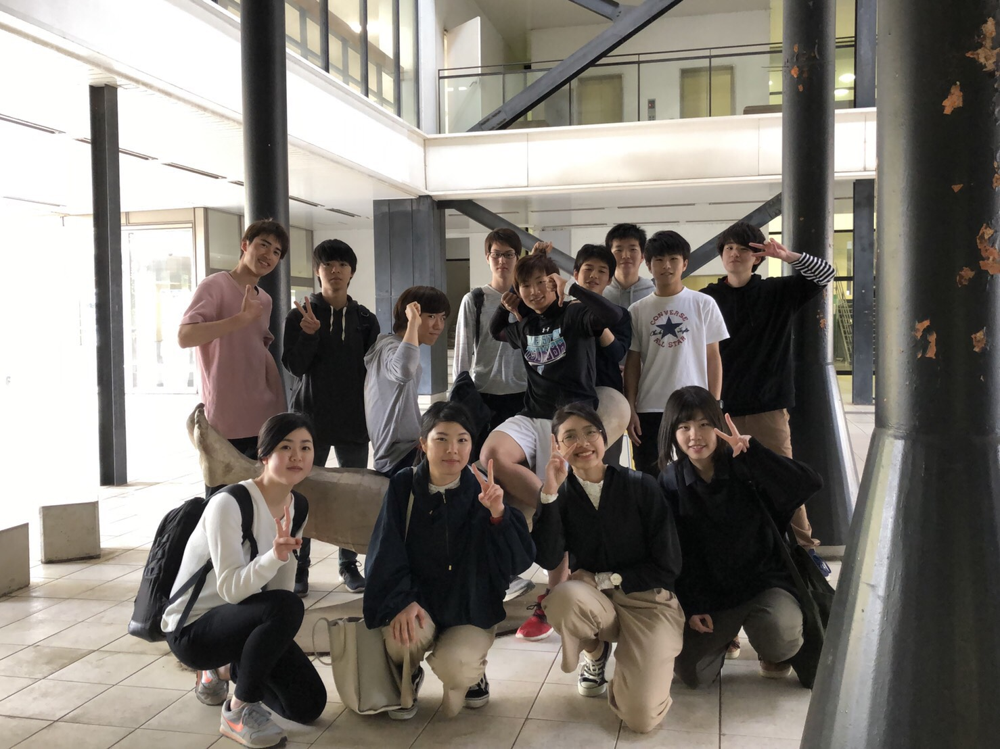
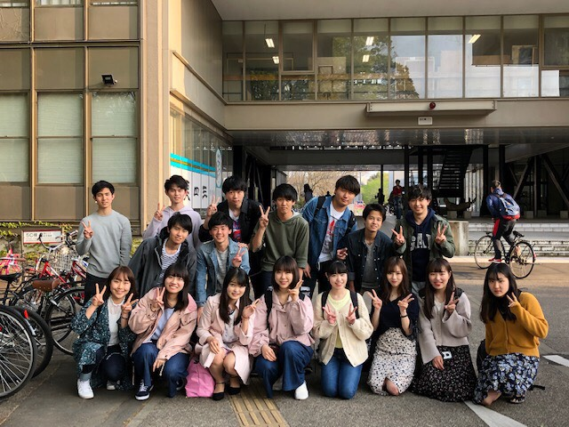
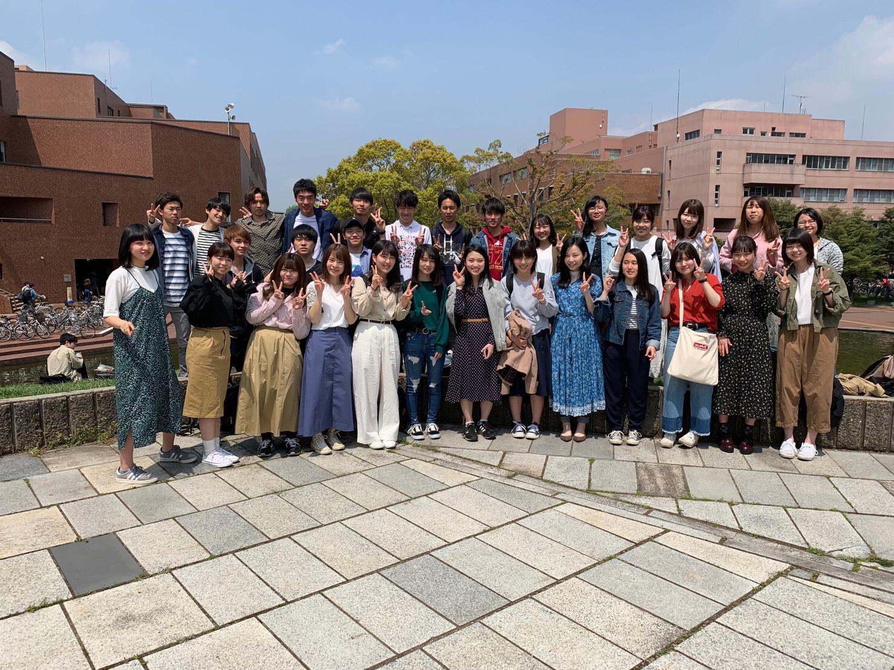
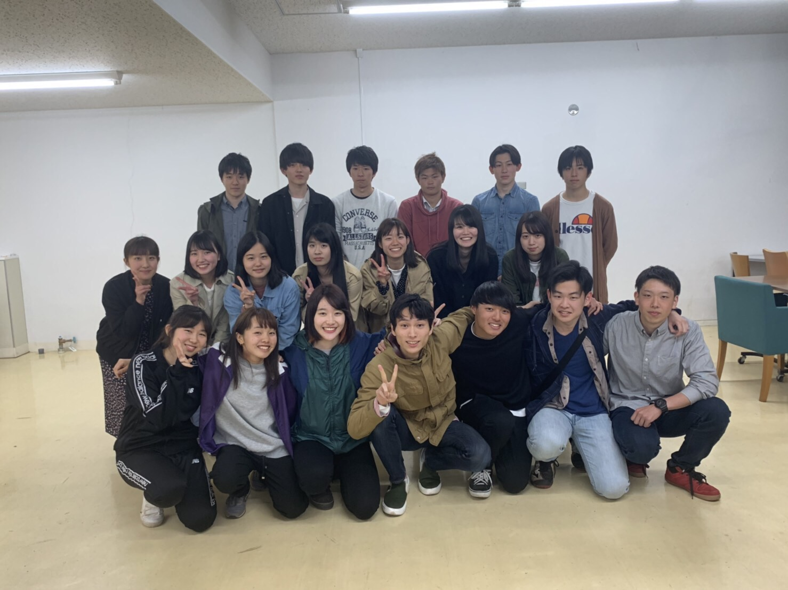
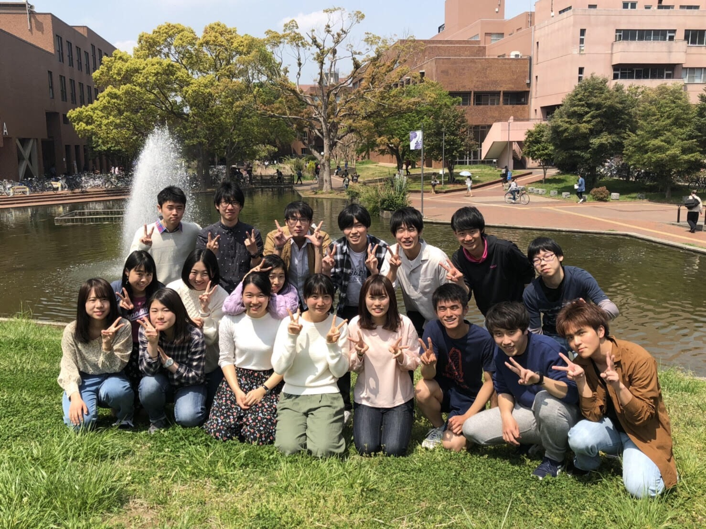
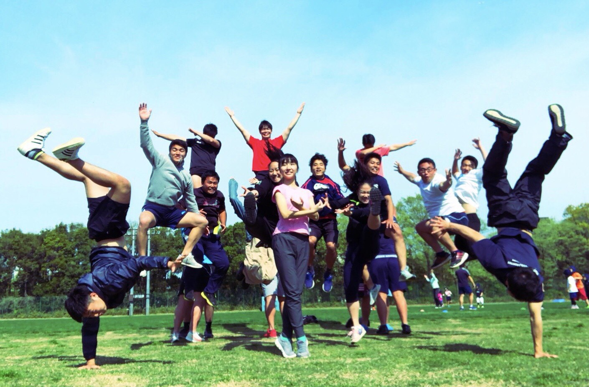

ゆかたコンテスト -ゆかコン-
ゆかコンとは...?
やどかり祭を締めくくる、最後の一大企画のことです。本祭の最後に有志の一年生グループがメインステージでパフォーマンスをするというもので、毎年大きな盛り上がりを見せています。
日時
本祭(1日)19時から
メインステージにて
No.1 人間学群 人間っていいな
自己PR
誰もが一度はあこがれる青春の1コマ。恋するも良し!
妄想を重ねこんな物語を作っちゃうも良し!
だって人間だもの。
これはありえたかもしれない1つの物語。
No.2 国際総合学類 CIS37
自己PR
Hey!Collage of International Study 37期がクールな
洋楽でセクシーに踊ってやど祭にグローバルな風を
吹かせます!Are you ready?Here we go!
No.3 社会学類 SGK48
自己PR
『昭和』から時代の流れとともに歩んでいく、
社学の誇る美男美女二人の物語をご覧あれ!
No.4 芸術専門学群 Artistic Guys
自己PR
アートの魔法が浴衣に奇跡を起こす!?
華麗な舞とポップなリズムで楽しいひと時をお届けします!
No.5 物理学類 日陰者
自己PR
日陰者だとかは関係ねえし
陰キャがイキるなとかまじmother fucker
そんな奴らは生きるなWhat the
行くぜ俺らはレペゼン物理
No.6 医学群 TM Revolution
自己PR
令和元年ゆかコンに革命を起こす!!
ティームメディカル!!僕たち、失敗しないので。
No.7 社会工学類 SHK48
自己PR
アイドルを目指して上京した社工の1年生
は果たしてトップアイドルになれるのか!
また、可愛いアイドルとインキャオタクの
パフォーマンスにもご注目を!
No.8 生命環境学群 ニャつ祭り
自己PR
曲者メンバーが織りなす謎の協和音。
コミカルな映像と音楽で展開する物語。
生命環境学群に刮目せよ。
No.9 春日エリア KASUG-AI
自己PR
あなたは、感情が数字でできていると思いますか。
AIは感情を持てると思いますか。
感動の5分間をあなたに
No.10 体育専門学群 スクールウォーズ
自己PR
この物語は信頼と愛の物語である。
One for All All for One